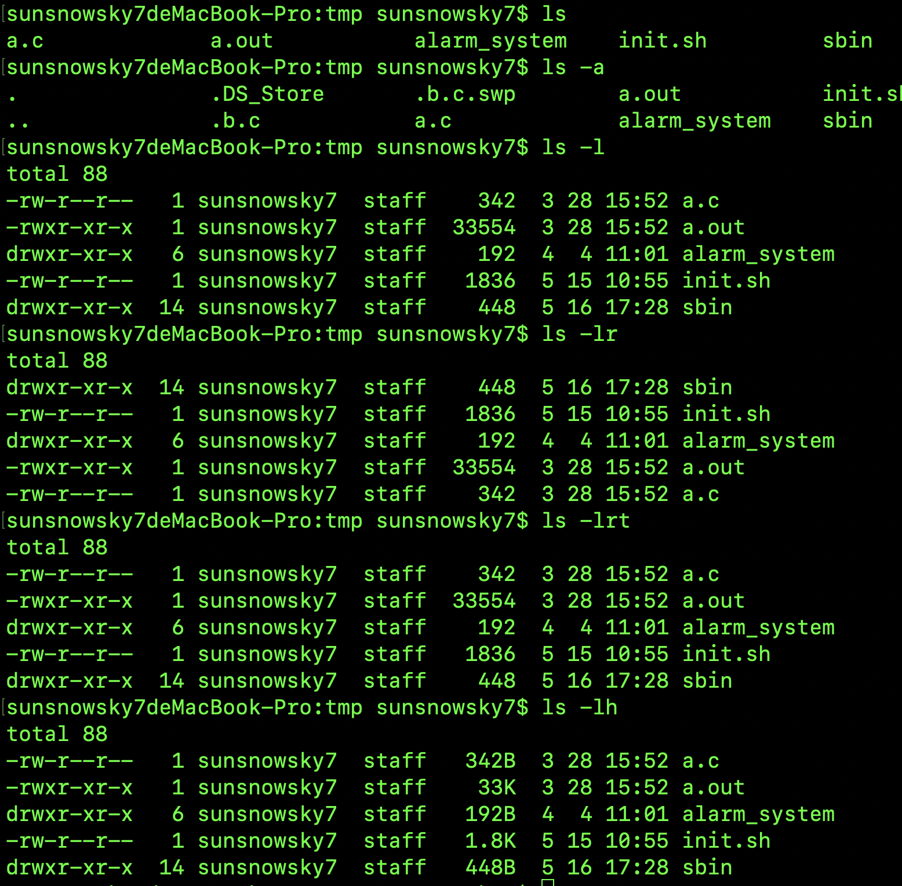
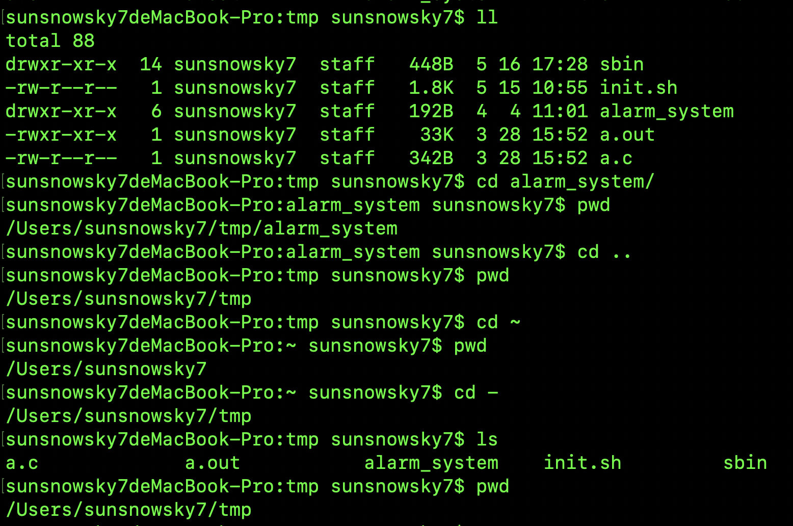

Linux基础教程
前言

- 计算机概论与硬件基础知识
需要了解一下计算机的进制等，cpu、内存、硬盘的工作原理，不需要深入，基本了解即可。- [重点] 先从Linux的安装与命令学起
linux有很多版本，目前分为Debian和Redhat这俩分支。目前发展比较好的有redhat、ubuntu、Debian、centos。国内的有统信、麒麟、deepin等。相关的基础命令一定要熟记。- [重点] Linux操作系统的基础技能
了解“用户、用户组的概念”、“权限的观念”、“程序的定义”等，尤其是权限的概念，一定要好好的学习。- [重点] 务必学会vi/vim文件编辑器
Linux的文本编辑器有很多，但是vi和vim这俩是王者般的存在，很多软件也会调用vi。- [重点] shell与shell脚本的学习
shell软件有很多，基本了解bash和zsh即可，但是重点shell脚本一定要熟悉，尤其是要涉及linux运维的话，shell是必备的。其中最重要的知识点：“正则表达式”、“管道命令”与“数据流重定向”很重要！！！- 一定要会软件管理
Linux常常会面临自己安装驱动程序或是安装额外软件的时候，尤其是嵌入式设备或学术研究单位。这个时候了解Tarball、RPM、DPKG、YUM、APT等软件管理等安装方式，就很重要了。- 网络基础的建立
如果上述的知识都通过了，那么网络的基础就是下一阶段要接触的东西，包含了“IP概念”、“路由概念”等。- 实践基础-搭建网站
实践是检验真理的唯一的标准，等达到这一步的时候，说明已经是linux的高手了。
博客计划
由于时间段，Linux涉及的知识比较多，因此采用从基础到复杂的方式编写博客。
对于不知道的命令有两种方法可以查看使用方法。一种是 man 命令 ,还有一种方式是命令 --help 。其中man查询的方式比较详细，help查询方式简洁明了。
基础命令（必背）
1. Linux 文件与目录管理
我们知道 Linux 的目录结构为树状结构，最顶级的目录为根目录 /。
其他目录通过挂载可以将它们添加到树中，通过解除挂载可以移除它们。
在开始本教程前我们需要先知道什么是绝对路径与相对路径。
- 绝对路径：
路径的写法，由根目录 / 写起，例如： /usr/share/doc 这个目录。- 相对路径：
路径的写法，不是由 / 写起，例如由 /usr/share/doc 要到 /usr/share/man 底下时，可以写成： cd ../man 这就是相对路径的写法。
处理目录的常用命令
接下来我们就来看几个常见的处理目录的命令：
- ls（英文全拼：list files）: 列出目录及文件名
- cd（英文全拼：change directory）：切换目录
- pwd（英文全拼：print work directory）：显示目前的目录
- mkdir（英文全拼：make directory）：创建一个新的目录
- rmdir（英文全拼：remove directory）：删除一个空的目录
- cp（英文全拼：copy file）: 复制文件或目录
- rm（英文全拼：remove）: 删除文件或目录
- mv（英文全拼：move file）: 移动文件与目录，或修改文件与目录的名称
你可以使用 man [命令] 来查看各个命令的使用文档，如 ：man cp。
ls (列出目录)
基本语法
ls [选项] [目录或是文件或是缺省]选项与参数：
-a ：全部的文件，连同隐藏文件( 开头为 . 的文件) 一起列出来(必背)
-d ：仅列出目录本身，而不是列出目录内的文件数据(常用)
-l ：长数据串列出，包含文件的属性与权限等等数据；（必背）
-h : 将文件容量以人类较易读的方式（例如GB、MB、KB等）列出来；（常用）
-r : 将排序结果反向输出，例如：原本文件名由小到大，反向则由大到小（必背，面试老6最喜欢问）
-t : 依时间排序，而不是用文件名。（必背）
-S : 以文件容量大小排序，而不是用文件名排序；（进阶）
–time={atime,ctime}：输出access时间或者改变权限属性时间（ctime），而非内容修改时间（modification time）（进阶）应用实例
以下为linux执行的实例：
- 上图中可以看到
ls -a将隐藏文件.b.c .b.c.swap .Ds_store全部显示出来，而ls并不显示隐藏文件； ls -l和ls -lr显示内容正好相反，因此参数r的作用就是将结果反向输出；ls -lrt即按照时间顺序以列表的形式反向输出，最新修改的文件排在最后，旧的文件排在最前，非常常用，尤其在日志查询的时，查询最新日志的命令；- 对比
ls -l和ls -lh会发现，带有参数h之后，文件大小会以 B、K、M、G 等更直观的方式显示，也常用。
- 上图中可以看到
cd (切换目录)
cd是 Change Directory 的缩写，这是用来变换工作目录的命令。
基本语法：
1
cd [相对路径或绝对路径]
选项参数
- ~ : 代表着该机器的家目录；
- $HOME : 跟 ～一样代表着家目录
- .. ： 上一级目录
- - : 退回原来的目录
- 绝对路径 ,如果该绝对路径存在，即从当前路径切入指定的绝对路径；
- 相对路径 ./下一级路径
应用实例

- 由上图可知，执行ll（实际自动映射的命令是ls -lrt后续解释原因）列出当前文件夹里有一个alarm_system的文件夹；
- cd alarm_system 即进入文件夹alarm_system
- pwd的命令是查看当前的路径，可知当前路径为：/Users/sunsnowsky7/tmp/alarm_system
- cd .. 返回上一级目录，即：/Users/sunsnowsky7/tmp
- cd ~ 进入家目录：即：/Users/sunsnowsky7/ （macos系统的家目录跟ubuntu的路径不大一样，ubuntu是/home/sunsnowsky7 其中sunsnowsky7为用户名）
- cd - 即返回原来的路径，由于当前所在的路径为家目录/Users/sunsnowsky7，上一次的路径为：/Users/sunsnowsky7/tmp，因此执行cd -,切换为原来路径：/Users/sunsnowsky7/tmp
pwd（英文全拼：print work directory）：显示目前的目录
- 基本语法
1
pwd
mkdir (创建新目录)
如果想要创建新的目录的话，那么就使用mkdir (make directory)吧。
- 语法：
1
mkdir [-mp] 目录名称
- 选项与参数：
-m ：配置文件的权限喔！直接配置，不需要看默认权限 (umask) 的脸色～
-p ：帮助你直接将所需要的目录(包含上一级目录)递归创建起来！(常用)
实例：请到/tmp底下尝试创建数个新目录看看：
1 | [root@www ~]# cd /tmp |
加了这个 -p 的选项，可以自行帮你创建多层目录！
实例：创建权限为 rwx–x–x 的目录。
1 | [root@www tmp]# mkdir -m 711 test2 |
上面的权限部分，如果没有加上 -m 来强制配置属性，系统会使用默认属性。
如果我们使用 -m ，如上例我们给予 -m 711 来给予新的目录 drwx–x–x 的权限。
rmdir (删除空的目录)
语法：
1 | rmdir [-p] 目录名称 |
- 选项与参数：
-p ：从该目录起，一次删除多级空目录
删除 lesson1 目录将 mkdir 实例中创建的目录(/tmp 底下)删除掉！1
[root@www tmp]# rmdir lesson1/
利用 -p 这个选项，立刻就可以将 test1/test2/test3/test4 一次删除。1
2
3
4
5
6
7
8
9
10[root@www tmp]# ls -l <==看看有多少目录存在？
drwxr-xr-x 3 root root 4096 Jul 18 12:50 test
drwxr-xr-x 3 root root 4096 Jul 18 12:53 test1
drwx--x--x 2 root root 4096 Jul 18 12:54 test2
[root@www tmp]# rmdir test <==可直接删除掉，没问题
[root@www tmp]# rmdir test1 <==因为尚有内容，所以无法删除！
rmdir: `test1': Directory not empty
[root@www tmp]# rmdir -p test1/test2/test3/test4
[root@www tmp]# ls -l <==您看看，底下的输出中test与test1不见了！
drwx--x--x 2 root root 4096 Jul 18 12:54 test2
不过要注意的是，这个 rmdir 仅能删除空的目录，你可以使用 rm 命令来删除非空目录。
cp (复制文件或目录)
cp 即拷贝文件和目录。
语法:
1 | [root@www ~]# cp [-adfilprsu] 来源档(source) 目标档(destination) |
- 选项与参数：
-a：相当於 -pdr 的意思，至於 pdr 请参考下列说明；(常用)
-d：若来源档为链接档的属性(link file)，则复制链接档属性而非文件本身；
-f：为强制(force)的意思，若目标文件已经存在且无法开启，则移除后再尝试一次；
-i：若目标档(destination)已经存在时，在覆盖时会先询问动作的进行(常用)
-l：进行硬式链接(hard link)的链接档创建，而非复制文件本身；
-p：连同文件的属性一起复制过去，而非使用默认属性(备份常用)；
-r：递归持续复制，用於目录的复制行为；(常用)
-s：复制成为符号链接档 (symbolic link)，亦即『捷径』文件；
-u：若 destination 比 source 旧才升级 destination ！
用 root 身份，将 root 目录下的 .bashrc 复制到 /tmp 下，并命名为 bashrc
1 | [root@www ~]# cp ~/.bashrc /tmp/bashrc |
rm (移除文件或目录)
- 语法：
1
rm [-fir] 文件或目录
- 选项与参数：
-f ：就是 force 的意思，忽略不存在的文件，不会出现警告信息；
-i ：互动模式，在删除前会询问使用者是否动作
-r ：递归删除啊！最常用在目录的删除了！这是非常危险的选项！！！
将刚刚在 cp 的实例中创建的 bashrc 删除掉！如果加上 -i 的选项就会主动询问喔，避免你删除到错误的档名！1
2[root@www tmp]# rm -i bashrc
rm: remove regular file `bashrc'? y
mv (移动文件与目录，或修改名称)
- 语法：
1
2[root@www ~]# mv [-fiu] source destination
[root@www ~]# mv [options] source1 source2 source3 .... directory - 选项与参数：
-f ：force 强制的意思，如果目标文件已经存在，不会询问而直接覆盖；
-i ：若目标文件 (destination) 已经存在时，就会询问是否覆盖！
-u ：若目标文件已经存在，且 source 比较新，才会升级 (update)
复制一文件，创建一目录，将文件移动到目录中将某个文件移动到某个目录去，就是这样做！1
2
3
4[root@www ~]# cd /tmp
[root@www tmp]# cp ~/.bashrc bashrc
[root@www tmp]# mkdir mvtest
[root@www tmp]# mv bashrc mvtest
将刚刚的目录名称更名为 mvtest21
[root@www tmp]# mv mvtest mvtest2
Linux 文件内容查看
Linux系统中使用以下命令来查看文件的内容：
cat 由第一行开始显示文件内容
tac 从最后一行开始显示，可以看出 tac 是 cat 的倒着写！
nl 显示的时候，顺道输出行号！
more 一页一页的显示文件内容
less 与 more 类似，但是比 more 更好的是，他可以往前翻页！
head 只看头几行
tail 只看尾巴几行
你可以使用 man [命令]来查看各个命令的使用文档，如 ：man cp。
cat
由第一行开始显示文件内容
- 语法：
1
cat [-AbEnTv]
- 选项与参数（不咋常用）：
-A ：相当於 -vET 的整合选项，可列出一些特殊字符而不是空白而已；
-b ：列出行号，仅针对非空白行做行号显示，空白行不标行号！
-E ：将结尾的断行字节 $ 显示出来；
-n ：列印出行号，连同空白行也会有行号，与 -b 的选项不同；
-T ：将 [tab] 按键以 ^I 显示出来；
-v ：列出一些看不出来的特殊字符
检看 /etc/issue 这个文件的内容：1
2
3[root@www ~]# cat /etc/issue
CentOS release 6.4 (Final)
Kernel \r on an \m
tac （不咋常用）
tac与cat命令刚好相反，文件内容从最后一行开始显示，可以看出 tac 是 cat 的倒着写！如：
1 | [root@www ~]# tac /etc/issue |
nl （不咋常用）
显示行号
- 语法：
1
nl [-bnw] 文件
- 选项与参数：
-b ：指定行号指定的方式，主要有两种：
-b a ：表示不论是否为空行，也同样列出行号(类似 cat -n)；
-b t ：如果有空行，空的那一行不要列出行号(默认值)；
-n ：列出行号表示的方法，主要有三种：
-n ln ：行号在荧幕的最左方显示；
-n rn ：行号在自己栏位的最右方显示，且不加 0 ；
-n rz ：行号在自己栏位的最右方显示，且加 0 ；
-w ：行号栏位的占用的位数。
实例一：用 nl 列出 /etc/issue 的内容
1 | [root@www ~]# nl /etc/issue |
#more
一页一页翻动
1 | [root@www ~]# more /etc/man_db.config |
在 more 这个程序的运行过程中，你有几个按键可以按的：
空白键 (space)：代表向下翻一页；
Enter ：代表向下翻『一行』；
/字串 ：代表在这个显示的内容当中，向下搜寻『字串』这个关键字；
:f ：立刻显示出档名以及目前显示的行数；
q ：代表立刻离开 more ，不再显示该文件内容。
b 或 [ctrl]-b ：代表往回翻页，不过这动作只对文件有用，对管线无用。
less
一页一页翻动，以下实例输出/etc/man.config文件的内容：
1 | [root@www ~]# less /etc/man.config |
less运行时可以输入的命令有：
空白键 ：向下翻动一页；
[pagedown]：向下翻动一页；
[pageup] ：向上翻动一页；
/字串 ：向下搜寻『字串』的功能；
?字串 ：向上搜寻『字串』的功能；
n ：重复前一个搜寻 (与 / 或 ? 有关！)
N ：反向的重复前一个搜寻 (与 / 或 ? 有关！)
q ：离开 less 这个程序；
head
取出文件前面几行
- 语法：
1
head [-n number] 文件
- 选项与参数：
-n ：后面接数字，代表显示几行的意思（常用）默认的情况中，显示前面 10 行！若要显示前 20 行，就得要这样：1
[root@www ~]# head /etc/man.config
1
[root@www ~]# head -n 20 /etc/man.config
tail
取出文件后面几行
- 语法：
1
tail [-n number] 文件
- 选项与参数：
-n ：后面接数字，代表显示几行的意思（常用）
-f ：表示持续侦测后面所接的档名，即实时显示日志，要等到按下[ctrl]-c才会结束tail的侦测(常用)1
2
3[root@www ~]# tail /etc/man.config
# 默认的情况中，显示最后的十行！若要显示最后的 20 行，就得要这样：
[root@www ~]# tail -n 20 /etc/man.config
Linux 用户和用户组管理
Linux系统是一个多用户多任务的分时操作系统，任何一个要使用系统资源的用户，都必须首先向系统管理员申请一个账号，然后以这个账号的身份进入系统。
用户的账号一方面可以帮助系统管理员对使用系统的用户进行跟踪，并控制他们对系统资源的访问；另一方面也可以帮助用户组织文件，并为用户提供安全性保护。
每个用户账号都拥有一个唯一的用户名和各自的口令。
用户在登录时键入正确的用户名和口令后，就能够进入系统和自己的主目录。
实现用户账号的管理，要完成的工作主要有如下几个方面：
- 用户账号的添加、删除与修改。
- 用户口令的管理。
- 用户组的管理。
一、Linux系统用户账号的管理
用户账号的管理工作主要涉及到用户账号的添加、修改和删除。
添加用户账号就是在系统中创建一个新账号，然后为新账号分配用户号、用户组、主目录和登录Shell等资源。刚添加的账号是被锁定的，无法使用。
1、添加新的用户账号使用useradd命令，其语法如下：
1 | useradd 选项 用户名 |
- 参数说明：
- 选项:
-c comment 指定一段注释性描述。
-d 目录 指定用户主目录，如果此目录不存在，则同时使用-m选项，可以创建主目录。
-g 用户组 指定用户所属的用户组。
-G 用户组，用户组 指定用户所属的附加组。
-s Shell文件 指定用户的登录Shell。
-u 用户号 指定用户的用户号，如果同时有-o选项，则可以重复使用其他用户的标识号。 - 用户名:
指定新账号的登录名。
- 选项:
实例1
1 | # useradd –d /home/sam -m sam |
此命令创建了一个用户sam，其中-d和-m选项用来为登录名sam产生一个主目录 /home/sam（/home为默认的用户主目录所在的父目录）。
实例2
1 | # useradd -s /bin/sh -g group –G adm,root gem |
此命令新建了一个用户gem，该用户的登录Shell是 /bin/sh，它属于group用户组，同时又属于adm和root用户组，其中group用户组是其主组。
这里可能新建组：#groupadd group及groupadd adm
增加用户账号就是在/etc/passwd文件中为新用户增加一条记录，同时更新其他系统文件如/etc/shadow, /etc/group等。
Linux提供了集成的系统管理工具userconf，它可以用来对用户账号进行统一管理。
2、删除帐号
如果一个用户的账号不再使用，可以从系统中删除。删除用户账号就是要将/etc/passwd等系统文件中的该用户记录删除，必要时还删除用户的主目录。
删除一个已有的用户账号使用userdel命令，其格式如下：
1 | userdel 选项 用户名 |
常用的选项是 -r，它的作用是把用户的主目录一起删除。
例如：
1 | # userdel -r sam |
此命令删除用户sam在系统文件中（主要是 /etc/passwd , /etc/shadow, /etc/group 等）的记录，同时删除用户的主目录。
3、修改帐号
修改用户账号就是根据实际情况更改用户的有关属性，如用户号、主目录、用户组、登录Shell等。
修改已有用户的信息使用usermod命令，其格式如下：
1 | usermod 选项 用户名 |
常用的选项包括-c, -d, -m, -g, -G, -s, -u以及-o等，这些选项的意义与useradd命令中的选项一样，可以为用户指定新的资源值。
另外，有些系统可以使用选项：-l 新用户名
这个选项指定一个新的账号，即将原来的用户名改为新的用户名。
例如：
1 | # usermod -s /bin/ksh -d /home/z –g developer sam |
此命令将用户sam的登录Shell修改为ksh，主目录改为/home/z，用户组改为developer。
4、用户口令的管理
用户管理的一项重要内容是用户口令的管理。用户账号刚创建时没有口令，但是被系统锁定，无法使用，必须为其指定口令后才可以使用，即使是指定空口令。
指定和修改用户口令的Shell命令是passwd。超级用户可以为自己和其他用户指定口令，普通用户只能用它修改自己的口令。命令的格式为：
1 | passwd 选项 用户名 |
- 可使用的选项：
-l 锁定口令，即禁用账号。
-u 口令解锁。
-d 使账号无口令。
-f 强迫用户下次登录时修改口令。
如果默认用户名，则修改当前用户的口令。
例如，假设当前用户是sam，则下面的命令修改该用户自己的口令：
1 | $ passwd |
如果是超级用户，可以用下列形式指定任何用户的口令：
1 | # passwd sam |
普通用户修改自己的口令时，passwd命令会先询问原口令，验证后再要求用户输入两遍新口令，如果两次输入的口令一致，则将这个口令指定给用户；而超级用户为用户指定口令时，就不需要知道原口令。
为了系统安全起见，用户应该选择比较复杂的口令，例如最好使用8位长的口令，口令中包含有大写、小写字母和数字，并且应该与姓名、生日等不相同。
为用户指定空口令时，执行下列形式的命令：
1 | # passwd -d sam |
此命令将用户 sam 的口令删除，这样用户 sam 下一次登录时，系统就不再允许该用户登录了。
passwd 命令还可以用 -l(lock) 选项锁定某一用户，使其不能登录，例如：
1 | # passwd -l sam |
二、Linux系统用户组的管理
每个用户都有一个用户组，系统可以对一个用户组中的所有用户进行集中管理。不同Linux 系统对用户组的规定有所不同，如Linux下的用户属于与它同名的用户组，这个用户组在创建用户时同时创建。
用户组的管理涉及用户组的添加、删除和修改。组的增加、删除和修改实际上就是对/etc/group文件的更新。
1、增加一个新的用户组使用groupadd命令。其格式如下：
1 | groupadd 选项 用户组 |
可以使用的选项有：
-g GID 指定新用户组的组标识号（GID）。
-o 一般与-g选项同时使用，表示新用户组的GID可以与系统已有用户组的GID相同。
实例1：
1 | # groupadd group1 |
此命令向系统中增加了一个新组group1，新组的组标识号是在当前已有的最大组标识号的基础上加1。
实例2：
1 | # groupadd -g 101 group2 |
此命令向系统中增加了一个新组group2，同时指定新组的组标识号是101。
2、如果要删除一个已有的用户组，使用groupdel命令，其格式如下：
1 | groupdel 用户组 |
例如：
1 | # groupdel group1 |
此命令从系统中删除组group1。
3、修改用户组的属性使用groupmod命令。其语法如下：
1 | groupmod 选项 用户组 |
常用的选项有：
-g GID 为用户组指定新的组标识号。
-o 与-g选项同时使用，用户组的新GID可以与系统已有用户组的GID相同。
-n新用户组 将用户组的名字改为新名字
实例1：
1 | # groupmod -g 102 group2 |
此命令将组group2的组标识号修改为102。
实例2：
1 | # groupmod –g 10000 -n group3 group2 |
此命令将组group2的标识号改为10000，组名修改为group3。
4、如果一个用户同时属于多个用户组，那么用户可以在用户组之间切换，以便具有其他用户组的权限。
用户可以在登录后，使用命令newgrp切换到其他用户组，这个命令的参数就是目的用户组。例如：
1 | $ newgrp root |
这条命令将当前用户切换到root用户组，前提条件是root用户组确实是该用户的主组或附加组。类似于用户账号的管理，用户组的管理也可以通过集成的系统管理工具来完成。
三、与用户账号有关的系统文件
完成用户管理的工作有许多种方法，但是每一种方法实际上都是对有关的系统文件进行修改。
与用户和用户组相关的信息都存放在一些系统文件中，这些文件包括/etc/passwd, /etc/shadow, /etc/group等。
下面分别介绍这些文件的内容。
1、/etc/passwd文件是用户管理工作涉及的最重要的一个文件。
Linux系统中的每个用户都在/etc/passwd文件中有一个对应的记录行，它记录了这个用户的一些基本属性。
这个文件对所有用户都是可读的。它的内容类似下面的例子：
1 | ＃ cat /etc/passwd |
从上面的例子我们可以看到，/etc/passwd中一行记录对应着一个用户，每行记录又被冒号(:)分隔为7个字段，其格式和具体含义如下：
1 | 用户名:口令:用户标识号:组标识号:注释性描述:主目录:登录Shell |
1）”用户名”是代表用户账号的字符串。
通常长度不超过8个字符，并且由大小写字母和/或数字组成。登录名中不能有冒号(:)，因为冒号在这里是分隔符。
为了兼容起见，登录名中最好不要包含点字符(.)，并且不使用连字符(-)和加号(+)打头。
2）“口令”一些系统中，存放着加密后的用户口令字。
虽然这个字段存放的只是用户口令的加密串，不是明文，但是由于/etc/passwd文件对所有用户都可读，所以这仍是一个安全隐患。因此，现在许多Linux 系统（如SVR4）都使用了shadow技术，把真正的加密后的用户口令字存放到/etc/shadow文件中，而在/etc/passwd文件的口令字段中只存放一个特殊的字符，例如“x”或者“*”。
3）“用户标识号”是一个整数，系统内部用它来标识用户。
一般情况下它与用户名是一一对应的。如果几个用户名对应的用户标识号是一样的，系统内部将把它们视为同一个用户，但是它们可以有不同的口令、不同的主目录以及不同的登录Shell等。
通常用户标识号的取值范围是0～65 535。0是超级用户root的标识号，1～99由系统保留，作为管理账号，普通用户的标识号从100开始。在Linux系统中，这个界限是500。
4）“组标识号”字段记录的是用户所属的用户组。
它对应着/etc/group文件中的一条记录。
5)“注释性描述”字段记录着用户的一些个人情况。
例如用户的真实姓名、电话、地址等，这个字段并没有什么实际的用途。在不同的Linux 系统中，这个字段的格式并没有统一。在许多Linux系统中，这个字段存放的是一段任意的注释性描述文字，用做finger命令的输出。
6)“主目录”，也就是用户的起始工作目录。
它是用户在登录到系统之后所处的目录。在大多数系统中，各用户的主目录都被组织在同一个特定的目录下，而用户主目录的名称就是该用户的登录名。各用户对自己的主目录有读、写、执行（搜索）权限，其他用户对此目录的访问权限则根据具体情况设置。
7)用户登录后，要启动一个进程，负责将用户的操作传给内核，这个进程是用户登录到系统后运行的命令解释器或某个特定的程序，即Shell。
Shell是用户与Linux系统之间的接口。Linux的Shell有许多种，每种都有不同的特点。常用的有sh(Bourne Shell), csh(C Shell), ksh(Korn Shell), tcsh(TENEX/TOPS-20 type C Shell), bash(Bourne Again Shell)等。
系统管理员可以根据系统情况和用户习惯为用户指定某个Shell。如果不指定Shell，那么系统使用sh为默认的登录Shell，即这个字段的值为/bin/sh。
用户的登录Shell也可以指定为某个特定的程序（此程序不是一个命令解释器）。
利用这一特点，我们可以限制用户只能运行指定的应用程序，在该应用程序运行结束后，用户就自动退出了系统。有些Linux 系统要求只有那些在系统中登记了的程序才能出现在这个字段中。
8)系统中有一类用户称为伪用户（pseudo users）。
这些用户在/etc/passwd文件中也占有一条记录，但是不能登录，因为它们的登录Shell为空。它们的存在主要是方便系统管理，满足相应的系统进程对文件属主的要求。
常见的伪用户如下所示：
- 伪 用 户 含 义
- bin 拥有可执行的用户命令文件
- sys 拥有系统文件
- adm 拥有帐户文件
- uucp UUCP使用
- lp lp或lpd子系统使用
- nobody NFS使用
拥有帐户文件
1、除了上面列出的伪用户外，还有许多标准的伪用户，例如：audit, cron, mail, usenet等，它们也都各自为相关的进程和文件所需要。
由于/etc/passwd文件是所有用户都可读的，如果用户的密码太简单或规律比较明显的话，一台普通的计算机就能够很容易地将它破解，因此对安全性要求较高的Linux系统都把加密后的口令字分离出来，单独存放在一个文件中，这个文件是/etc/shadow文件。 有超级用户才拥有该文件读权限，这就保证了用户密码的安全性。
2、/etc/shadow中的记录行与/etc/passwd中的一一对应，它由pwconv命令根据/etc/passwd中的数据自动产生
它的文件格式与/etc/passwd类似，由若干个字段组成，字段之间用”:”隔开。这些字段是：
1 | 登录名:加密口令:最后一次修改时间:最小时间间隔:最大时间间隔:警告时间:不活动时间:失效时间:标志 |
3、用户组的所有信息都存放在/etc/group文件中。
将用户分组是Linux 系统中对用户进行管理及控制访问权限的一种手段。
每个用户都属于某个用户组；一个组中可以有多个用户，一个用户也可以属于不同的组。
当一个用户同时是多个组中的成员时，在/etc/passwd文件中记录的是用户所属的主组，也就是登录时所属的默认组，而其他组称为附加组。
用户要访问属于附加组的文件时，必须首先使用newgrp命令使自己成为所要访问的组中的成员。
用户组的所有信息都存放在/etc/group文件中。此文件的格式也类似于/etc/passwd文件，由冒号(:)隔开若干个字段，这些字段有：
1 | 组名:口令:组标识号:组内用户列表 |
- “组名”是用户组的名称，由字母或数字构成。与/etc/passwd中的登录名一样，组名不应重复。
- “口令”字段存放的是用户组加密后的口令字。一般Linux 系统的用户组都没有口令，即这个字段一般为空，或者是*。
- “组标识号”与用户标识号类似，也是一个整数，被系统内部用来标识组。
- “组内用户列表”是属于这个组的所有用户的列表，不同用户之间用逗号(,)分隔。这个用户组可能是用户的主组，也可能是附加组。
/etc/group文件的一个例子如下：1
2
3
4
5
6
7root::0:root
bin::2:root,bin
sys::3:root,uucp
adm::4:root,adm
daemon::5:root,daemon
lp::7:root,lp
users::20:root,sam
四、添加批量用户
添加和删除用户对每位Linux系统管理员都是轻而易举的事，比较棘手的是如果要添加几十个、上百个甚至上千个用户时，我们不太可能还使用useradd一个一个地添加，必然要找一种简便的创建大量用户的方法。Linux系统提供了创建大量用户的工具，可以让您立即创建大量用户，方法如下：
（1）先编辑一个文本用户文件。
每一列按照/etc/passwd密码文件的格式书写，要注意每个用户的用户名、UID、宿主目录都不可以相同，其中密码栏可以留做空白或输入x号。一个范例文件user.txt内容如下：
1 | user001::600:100:user:/home/user001:/bin/bash |
（2）以root身份执行命令 /usr/sbin/newusers，从刚创建的用户文件user.txt中导入数据，创建用户：
1 | # newusers < user.txt |
然后可以执行命令 vipw 或 vi /etc/passwd 检查 /etc/passwd 文件是否已经出现这些用户的数据，并且用户的宿主目录是否已经创建。
（3）执行命令/usr/sbin/pwunconv。
将 /etc/shadow 产生的 shadow 密码解码，然后回写到 /etc/passwd 中，并将/etc/shadow的shadow密码栏删掉。这是为了方便下一步的密码转换工作，即先取消 shadow password 功能。
1 | # pwunconv |
（4）编辑每个用户的密码对照文件。
格式为：
1 | 用户名:密码 |
实例文件 passwd.txt 内容如下：
1 | user001:123456 |
（5）以 root 身份执行命令 /usr/sbin/chpasswd。
创建用户密码，chpasswd 会将经过 /usr/bin/passwd 命令编码过的密码写入 /etc/passwd 的密码栏。
1 | # chpasswd < passwd.txt |
（6）确定密码经编码写入/etc/passwd的密码栏后。
执行命令 /usr/sbin/pwconv 将密码编码为 shadow password，并将结果写入 /etc/shadow。
1 | # pwconv |
这样就完成了大量用户的创建了，之后您可以到/home下检查这些用户宿主目录的权限设置是否都正确，并登录验证用户密码是否正确。
Linux 磁盘管理 （重点）
Linux 磁盘管理好坏直接关系到整个系统的性能问题。
Linux 磁盘管理常用三个命令为 df、du 和 fdisk。
- df（英文全称：disk free）：列出文件系统的整体磁盘使用量
- du（英文全称：disk used）：检查磁盘空间使用量
- fdisk：用于磁盘分区
df
df命令参数功能：检查文件系统的磁盘空间占用情况。可以利用该命令来获取硬盘被占用了多少空间，目前还剩下多少空间等信息。
语法：
1 | df [-ahikHTm] [目录或文件名] |
- 选项与参数：
-a ：列出所有的文件系统，包括系统特有的 /proc 等文件系统； -k ：以 KBytes 的容量显示各文件系统； -m ：以 MBytes 的容量显示各文件系统； -h ：以人们较易阅读的 GBytes, MBytes, KBytes 等格式自行显示； -H ：以 M=1000K 取代 M=1024K 的进位方式； -T ：显示文件系统类型, 连同该 partition 的 filesystem 名称 (例如 ext3) 也列出； -i ：不用硬盘容量，而以 inode 的数量来显示
实例 1
将系统内所有的文件系统列出来！
1 | [root@www ~]# df |
在 Linux 底下如果 df 没有加任何选项，那么默认会将系统内所有的 (不含特殊内存内的文件系统与 swap) 都以 1 Kbytes 的容量来列出来！
实例 2
将容量结果以易读的容量格式显示出来
1 | [root@www ~]# df -h |
实例 3
将系统内的所有特殊文件格式及名称都列出来
1 | [root@www ~]# df -aT |
实例 4
将 /etc 底下的可用的磁盘容量以易读的容量格式显示
1 | [root@www ~]# df -h /etc |
du
Linux du 命令也是查看使用空间的，但是与 df 命令不同的是 Linux du 命令是对文件和目录磁盘使用的空间的查看，还是和df命令有一些区别的，这里介绍 Linux du 命令。
语法：
du [-ahskm] 文件或目录名称
- 选项与参数：
-a ：列出所有的文件与目录容量，因为默认仅统计目录底下的文件量而已。 -h ：以人们较易读的容量格式 (G/M) 显示； -s ：列出总量而已，而不列出每个各别的目录占用容量； -S ：不包括子目录下的总计，与 -s 有点差别。 -k ：以 KBytes 列出容量显示； -m ：以 MBytes 列出容量显示； --max-depth=1 ： 这里的1代表一层目录，可以尝试2或者3瞅瞅有惊喜，哈哈哈，层次越大，文件越多越乱
实例 1
只列出当前目录下的所有文件夹容量（包括隐藏文件夹）:
1 | [root@www ~]# du |
直接输入 du 没有加任何选项时，则 du 会分析当前所在目录里的子目录所占用的硬盘空间。
实例 2
将文件的容量也列出来
1 | [root@www ~]# du -a |
实例 3
检查根目录底下每个目录所占用的容量
1 | [root@www ~]# du -sm /* |
通配符 * 来代表每个目录。
与 df 不一样的是，du 这个命令其实会直接到文件系统内去搜寻所有的文件数据。
fdisk （进阶）
fdisk 是 Linux 的磁盘分区表操作工具。
语法：
1 | fdisk [-l] 装置名称 |
- 选项与参数：
-l ：输出后面接的装置所有的分区内容。若仅有 fdisk -l 时， 则系统将会把整个系统内能够搜寻到的装置的分区均列出来。
实例 1
列出所有分区信息
1 | [root@AY120919111755c246621 tmp]# fdisk -l |
实例 2
找出你系统中的根目录所在磁盘，并查阅该硬盘内的相关信息
1 | [root@www ~]# df / <==注意：重点在找出磁盘文件名而已 |
输入 m 后，就会看到底下这些命令介绍
1 | Command (m for help): m <== 输入 m 后，就会看到底下这些命令介绍 |
离开 fdisk 时按下 q，那么所有的动作都不会生效！相反的， 按下w就是动作生效的意思。
1 | Command (m for help): p <== 这里可以输出目前磁盘的状态 |
想要不储存离开吗？按下 q 就对了！不要随便按 w 啊！
使用 p 可以列出目前这颗磁盘的分割表信息，这个信息的上半部在显示整体磁盘的状态。
磁盘格式化 （进阶）
磁盘分割完毕后自然就是要进行文件系统的格式化，格式化的命令非常的简单，使用 mkfs（make filesystem） 命令。
语法：
1 | mkfs [-t 文件系统格式] 装置文件名 |
- 选项与参数：
-t ：可以接文件系统格式，例如 ext3, ext2, vfat 等(系统有支持才会生效)
实例 1
查看 mkfs 支持的文件格式
1 | [root@www ~]# mkfs[tab][tab] |
按下两个[tab]，会发现 mkfs 支持的文件格式如上所示。
实例 2
将分区 /dev/hdc6（可指定你自己的分区） 格式化为 ext3 文件系统：
1 | [root@www ~]# mkfs -t ext3 /dev/hdc6 |
磁盘检验 (进阶)
fsck（file system check）用来检查和维护不一致的文件系统。
若系统掉电或磁盘发生问题，可利用fsck命令对文件系统进行检查。
语法：
1 | fsck [-t 文件系统] [-ACay] 装置名称 |
- 选项与参数：
-t : 给定档案系统的型式，若在 /etc/fstab 中已有定义或 kernel 本身已支援的则不需加上此参数 -s : 依序一个一个地执行 fsck 的指令来检查 -A : 对/etc/fstab 中所有列出来的 分区（partition）做检查 -C : 显示完整的检查进度 -d : 打印出 e2fsck 的 debug 结果 -p : 同时有 -A 条件时，同时有多个 fsck 的检查一起执行 -R : 同时有 -A 条件时，省略 / 不检查 -V : 详细显示模式 -a : 如果检查有错则自动修复 -r : 如果检查有错则由使用者回答是否修复 -y : 选项指定检测每个文件是自动输入yes，在不确定那些是不正常的时候，可以执行 # fsck -y 全部检查修复。
实例 1
查看系统有多少文件系统支持的 fsck 命令：
1 | [root@www ~]# fsck[tab][tab] |
实例 2
强制检测 /dev/hdc6 分区:
1 | [root@www ~]# fsck -C -f -t ext3 /dev/hdc6 |
如果没有加上 -f 的选项，则由于这个文件系统不曾出现问题，检查的经过非常快速！若加上 -f 强制检查，才会一项一项的显示过程。
磁盘挂载与卸除（常用）
Linux 的磁盘挂载使用 mount 命令，卸载使用 umount 命令。
磁盘挂载语法：
1 | mount [-t 文件系统] [-L Label名] [-o 额外选项] [-n] 装置文件名 挂载点 |
实例 1
用默认的方式，将刚刚创建的 /dev/hdc6 挂载到 /mnt/hdc6 上面！
1 | [root@www ~]# mkdir /mnt/hdc6 |
磁盘卸载命令 umount 语法：
1 | umount [-fn] 装置文件名或挂载点 |
- 选项与参数：
-f ：强制卸除！可用在类似网络文件系统 (NFS) 无法读取到的情况下； -n ：不升级 /etc/mtab 情况下卸除。
卸载/dev/hdc6
1 | [root@www ~]# umount /dev/hdc6 |
Linux vi/vim （重点）
所有的 Unix Like 系统都会内建 vi 文书编辑器，其他的文书编辑器则不一定会存在。
但是目前我们使用比较多的是 vim 编辑器。
vim 具有程序编辑的能力，可以主动的以字体颜色辨别语法的正确性，方便程序设计。
相关文章：史上最全Vim快捷键键位图 — 入门到进阶
什么是 vim？
Vim 是从 vi 发展出来的一个文本编辑器。代码补全、编译及错误跳转等方便编程的功能特别丰富，在程序员中被广泛使用。
简单的来说， vi 是老式的字处理器，不过功能已经很齐全了，但是还是有可以进步的地方。 vim 则可以说是程序开发者的一项很好用的工具。
连 vim 的官方网站 (https://www.vim.org/) 自己也说 vim 是一个程序开发工具而不是文字处理软件。
vim 键盘图
- vi/vim 的使用
基本上 vi/vim 共分为三种模式，命令模式（Command Mode）、输入模式（Insert Mode）和命令行模式（Command-Line Mode）。
命令模式
用户刚刚启动 vi/vim，便进入了命令模式。
此状态下敲击键盘动作会被 Vim 识别为命令，而非输入字符，比如我们此时按下 i，并不会输入一个字符，i 被当作了一个命令。
以下是普通模式常用的几个命令：
i – 切换到输入模式，在光标当前位置开始输入文本。
x – 删除当前光标所在处的字符。 - – 切换到底线命令模式，以在最底一行输入命令。
a – 进入插入模式，在光标下一个位置开始输入文本。
o：在当前行的下方插入一个新行，并进入插入模式。
O – 在当前行的上方插入一个新行，并进入插入模式。
dd – 删除当前行。
yy – 复制当前行。
p – 粘贴剪贴板内容到光标下方。
P – 粘贴剪贴板内容到光标上方。
u – 撤销上一次操作。
Ctrl + r – 重做上一次撤销的操作。
:w – 保存文件。
:q – 退出 Vim 编辑器。
:q! – 强制退出Vim 编辑器，不保存修改。
若想要编辑文本，只需要启动 Vim，进入了命令模式，按下 i 切换到输入模式即可。
命令模式只有一些最基本的命令，因此仍要依靠底线命令行模式输入更多命令。
输入模式
在命令模式下按下 i 就进入了输入模式，使用 Esc 键可以返回到普通模式。
在输入模式中，可以使用以下按键：
字符按键以及Shift组合，输入字符
ENTER，回车键，换行
BACK SPACE，退格键，删除光标前一个字符
DEL，删除键，删除光标后一个字符
方向键，在文本中移动光标
HOME/END，移动光标到行首/行尾
Page Up/Page Down，上/下翻页
Insert，切换光标为输入/替换模式，光标将变成竖线/下划线
ESC，退出输入模式，切换到命令模式
底线命令模式
在命令模式下按下 :（英文冒号）就进入了底线命令模式。
底线命令模式可以输入单个或多个字符的命令，可用的命令非常多。
在底线命令模式中，基本的命令有（已经省略了冒号）：
:w：保存文件。
:q：退出 Vim 编辑器。
:wq：保存文件并退出 Vim 编辑器。
:q!：强制退出Vim编辑器，不保存修改。
按 ESC 键可随时退出底线命令模式。
简单的说，我们可以将这三个模式想成底下的图标来表示：
vi/vim 使用实例
使用 vi/vim 进入一般模式
如果你想要使用 vi 来建立一个名为 runoob.txt 的文件时，你可以这样做：
$ vim runoob.txt
直接输入 vi 文件名 就能够进入 vi 的一般模式了。请注意，记得 vi 后面一定要加文件名，不管该文件存在与否！
按下 i 进入输入模式(也称为编辑模式)，开始编辑文字
在一般模式之中，只要按下 i, o, a 等字符就可以进入输入模式了！
在编辑模式当中，你可以发现在左下角状态栏中会出现 –INSERT- 的字样，那就是可以输入任意字符的提示。
这个时候，键盘上除了 Esc 这个按键之外，其他的按键都可以视作为一般的输入按钮了，所以你可以进行任何的编辑。
按下 ESC 按钮回到一般模式
好了，假设我已经按照上面的样式给他编辑完毕了，那么应该要如何退出呢？是的！没错！就是给他按下 Esc 这个按钮即可！马上你就会发现画面左下角的 – INSERT – 不见了！
在一般模式中按下 :wq 储存后离开 vi
OK，我们要存档了，存盘并离开的指令很简单，输入 :wq 即可保存离开！
OK! 这样我们就成功创建了一个 runoob.txt 的文件。
vi/vim 按键说明
除了上面简易范例的 i, Esc, :wq 之外，其实 vim 还有非常多的按键可以使用。
第一部分：一般模式可用的光标移动、复制粘贴、搜索替换等
移动光标的方法
h 或 向左箭头键(←) 光标向左移动一个字符
j 或 向下箭头键(↓) 光标向下移动一个字符
k 或 向上箭头键(↑) 光标向上移动一个字符
l 或 向右箭头键(→) 光标向右移动一个字符
如果你将右手放在键盘上的话，你会发现 hjkl 是排列在一起的，因此可以使用这四个按钮来移动光标。 如果想要进行多次移动的话，例如向下移动 30 行，可以使用 “30j” 或 “30↓” 的组合按键， 亦即加上想要进行的次数(数字)后，按下动作即可！
[Ctrl] + [f] 屏幕『向下』移动一页，相当于 [Page Down]按键 (常用)
[Ctrl] + [b] 屏幕『向上』移动一页，相当于 [Page Up] 按键 (常用)
[Ctrl] + [d] 屏幕『向下』移动半页
[Ctrl] + [u] 屏幕『向上』移动半页
+ 光标移动到非空格符的下一行
- 光标移动到非空格符的上一行
n
0 或功能键[Home] 这是数字『 0 』：移动到这一行的最前面字符处 (常用)
$ 或功能键[End] 移动到这一行的最后面字符处(常用)
H 光标移动到这个屏幕的最上方那一行的第一个字符
M 光标移动到这个屏幕的中央那一行的第一个字符
L 光标移动到这个屏幕的最下方那一行的第一个字符
G 移动到这个档案的最后一行(常用)
nG n 为数字。移动到这个档案的第 n 行。例如 20G 则会移动到这个档案的第 20 行(可配合 :set nu)
gg 移动到这个档案的第一行，相当于 1G 啊！ (常用)
n
搜索替换
/word 向光标之下寻找一个名称为 word 的字符串。例如要在档案内搜寻 vbird 这个字符串，就输入 /vbird 即可！ (常用)
?word 向光标之上寻找一个字符串名称为 word 的字符串。
n 这个 n 是英文按键。代表重复前一个搜寻的动作。举例来说， 如果刚刚我们执行 /vbird 去向下搜寻 vbird 这个字符串，则按下 n 后，会向下继续搜寻下一个名称为 vbird 的字符串。如果是执行 ?vbird 的话，那么按下 n 则会向上继续搜寻名称为 vbird 的字符串！
N 这个 N 是英文按键。与 n 刚好相反，为『反向』进行前一个搜寻动作。 例如 /vbird 后，按下 N 则表示『向上』搜寻 vbird 。
使用 /word 配合 n 及 N 是非常有帮助的！可以让你重复的找到一些你搜寻的关键词！
:n1,n2s/word1/word2/g n1 与 n2 为数字。在第 n1 与 n2 行之间寻找 word1 这个字符串，并将该字符串取代为 word2 ！举例来说，在 100 到 200 行之间搜寻 vbird 并取代为 VBIRD 则：
『:100,200s/vbird/VBIRD/g』。(常用)
:1,$s/word1/word2/g 或 :%s/word1/word2/g 从第一行到最后一行寻找 word1 字符串，并将该字符串取代为 word2 ！(常用)
:1,$s/word1/word2/gc 或 :%s/word1/word2/gc 从第一行到最后一行寻找 word1 字符串，并将该字符串取代为 word2 ！且在取代前显示提示字符给用户确认 (confirm) 是否需要取代！(常用)
删除、复制与贴上
x, X 在一行字当中，x 为向后删除一个字符 (相当于 [del] 按键)， X 为向前删除一个字符(相当于 [backspace] 亦即是退格键) (常用)
nx n 为数字，连续向后删除 n 个字符。举例来说，我要连续删除 10 个字符， 『10x』。
dd 剪切游标所在的那一整行(常用)，用 p/P 可以粘贴。
ndd n 为数字。剪切光标所在的向下 n 行，例如 20dd 则是剪切 20 行(常用)，用 p/P 可以粘贴。
d1G 删除光标所在到第一行的所有数据
dG 删除光标所在到最后一行的所有数据
d$ 删除游标所在处，到该行的最后一个字符
d0 那个是数字的 0 ，删除游标所在处，到该行的最前面一个字符
yy 复制游标所在的那一行(常用)
nyy n 为数字。复制光标所在的向下 n 行，例如 20yy 则是复制 20 行(常用)
y1G 复制游标所在行到第一行的所有数据
yG 复制游标所在行到最后一行的所有数据
y0 复制光标所在的那个字符到该行行首的所有数据
y$ 复制光标所在的那个字符到该行行尾的所有数据
p, P p 为将已复制的数据在光标下一行贴上，P 则为贴在游标上一行！ 举例来说，我目前光标在第 20 行，且已经复制了 10 行数据。则按下 p 后， 那 10 行数据会贴在原本的 20 行之后，亦即由 21 行开始贴。但如果是按下 P 呢？ 那么原本的第 20 行会被推到变成 30 行。 (常用)
J 将光标所在行与下一行的数据结合成同一行
c 重复删除多个数据，例如向下删除 10 行，[ 10cj ]
u 复原前一个动作。(常用)
[Ctrl]+r 重做上一个动作。(常用)
这个 u 与 [Ctrl]+r 是很常用的指令！一个是复原，另一个则是重做一次～ 利用这两个功能按键，你的编辑，嘿嘿！很快乐的啦！
. 不要怀疑！这就是小数点！意思是重复前一个动作的意思。 如果你想要重复删除、重复贴上等等动作，按下小数点『.』就好了！ (常用)
第二部分：一般模式切换到编辑模式的可用的按钮说明
进入输入或取代的编辑模式
i, I 进入输入模式(Insert mode)：
i 为『从目前光标所在处输入』， I 为『在目前所在行的第一个非空格符处开始输入』。 (常用)
a, A 进入输入模式(Insert mode)：
a 为『从目前光标所在的下一个字符处开始输入』， A 为『从光标所在行的最后一个字符处开始输入』。(常用)
o, O 进入输入模式(Insert mode)：
这是英文字母 o 的大小写。o 为在目前光标所在的下一行处输入新的一行； O 为在目前光标所在的上一行处输入新的一行！(常用)
r, R 进入取代模式(Replace mode)：
r 只会取代光标所在的那一个字符一次；R会一直取代光标所在的文字，直到按下 ESC 为止；(常用)
上面这些按键中，在 vi 画面的左下角处会出现『–INSERT–』或『–REPLACE–』的字样。 由名称就知道该动作了吧！！特别注意的是，我们上面也提过了，你想要在档案里面输入字符时， 一定要在左下角处看到 INSERT 或 REPLACE 才能输入喔！
[Esc] 退出编辑模式，回到一般模式中(常用)
第三部分：一般模式切换到指令行模式的可用的按钮说明
指令行的储存、离开等指令
:w 将编辑的数据写入硬盘档案中(常用)
:w! 若文件属性为『只读』时，强制写入该档案。不过，到底能不能写入， 还是跟你对该档案的档案权限有关啊！
:q 离开 vi (常用)
:q! 若曾修改过档案，又不想储存，使用 ! 为强制离开不储存档案。
注意一下啊，那个惊叹号 (!) 在 vi 当中，常常具有『强制』的意思～
:wq 储存后离开，若为 :wq! 则为强制储存后离开 (常用)
ZZ 这是大写的 Z 喔！如果修改过，保存当前文件，然后退出！效果等同于(保存并退出)
ZQ 不保存，强制退出。效果等同于 :q!。
:w [filename] 将编辑的数据储存成另一个档案（类似另存新档）
:r [filename] 在编辑的数据中，读入另一个档案的数据。亦即将 『filename』 这个档案内容加到游标所在行后面
:n1,n2 w [filename] 将 n1 到 n2 的内容储存成 filename 这个档案。
:! command 暂时离开 vi 到指令行模式下执行 command 的显示结果！例如
『:! ls /home』即可在 vi 当中察看 /home 底下以 ls 输出的档案信息！
vim 环境的变更
:set nu 显示行号，设定之后，会在每一行的前缀显示该行的行号
:set nonu 与 set nu 相反，为取消行号！
特别注意，在 vi/vim 中，数字是很有意义的！数字通常代表重复做几次的意思！ 也有可能是代表去到第几个什么什么的意思。
举例来说，要删除 50 行，则是用 『50dd』 对吧！ 数字加在动作之前，如我要向下移动 20 行呢？那就是『20j』或者是『20↓』即可。